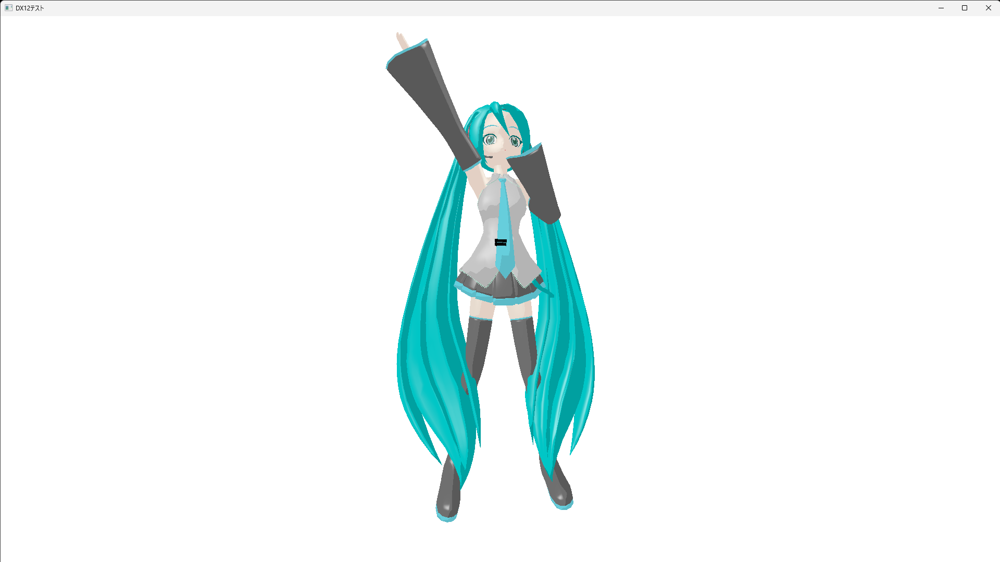

DirectX12Renderer
鋭意制作中!!
DirectX 12の学習のために、ゲームエンジンを使わず1から書いている自作レンダラーです。
ウィンドウを出すところから始めて、画面のクリア、三角形・四角形の描画、テクスチャ、
3Dモデルの読み込みと、順番に積み上げてきました。
現在はPMD形式の3Dモデルを読み込んで、トゥーンシェーディングやスフィアマップを効かせつつ、
VMDファイルのモーションに合わせて踊らせるところまで動いています。
最終的な目標は、自分がBlenderで作ったモデル（glTF形式）を
このレンダラーで表示させることです。
言語はC++20、ライブラリはDirectX 12（Direct3D 12 / DXGI / DirectXMath）と、
テクスチャ読み込み用のDirectXTexのみを使用しています。

▲ PMDモデルを読み込み、VMDファイルのモーションを再生している様子。
トゥーンシェーディングによる段階的な陰影と、ボーンによるスキニングが効いています。
※ スクリーンショットに使用している3Dモデルは、MikuMikuDance（樋口優氏）に同梱されている
「初音ミク ver.1.3」モデルです。
モデリング：あにまさ氏 ／ データ変換：京 秋人氏 ／ Copyright：CRYPTON FUTURE MEDIA, INC
※ モデルデータは本サイトおよびGitHubリポジトリでは配布していません。
※ キャラクター「初音ミク」は クリプトン・フューチャー・メディア株式会社 の著作物であり、
ピアプロ・キャラクター・ライセンスに基づく非営利の利用です。
© Crypton Future Media, INC. www.piapro.net
ここまでに実装した内容です。
・ウィンドウの生成とDirect3D 12デバイスの初期化
・コマンドリスト／コマンドキュー／スワップチェーンによる画面クリア
・リソースバリアによる状態遷移
・頂点バッファ・インデックスバッファを用いたポリゴンの描画
・ルートシグネチャ／ディスクリプタヒープ／シェーダーリソースビューによるテクスチャ貼り付け
・画像ファイルの読み込み（DirectXTex）
・定数バッファと行列による座標変換（ワールド・ビュー・プロジェクション）
・深度バッファ
・PMDモデルの読み込みとマテリアルごとの描画
・トゥーンシェーディング／スフィアマップ（乗算・加算）／スペキュラ
・ボーンによるスキニング
・VMDファイルの読み込みとキーフレームアニメーションの再生
現在取り組んでいるのは、glTF（.glb）モデルの読み込みと描画です。
最初はすべてmain関数に書いていましたが、行数が増えて読みづらくなってきたので、
役割ごとにクラスへ切り出しました。
現在は次の4つで構成しています。
・Application：ウィンドウの生成とメッセージループ。全体の進行役
・Dx12Wrapper：デバイス、スワップチェーン、コマンド関連、レンダーターゲット、
深度バッファ、シーン共通の定数バッファ、テクスチャ生成といったDirectX 12の基盤部分
・PMDRenderer：ルートシグネチャ、シェーダー、パイプラインステートといった「描き方」
・PMDActor：頂点・インデックス・マテリアル・ボーンといった「描かれるデータ」
特に意識したのが、PMDRenderer（描き方）とPMDActor（データ）を分けることです。
パイプラインはモデル間で共通なので1回設定すれば済みますが、
頂点バッファやマテリアルはモデルごとに違います。
ここを分けておくと、後からモデルを複数体出すときにパイプラインを使い回せます。
DirectX 12はDirectX 11と違って、GPUに渡すリソースの置き場所を
自分で設計しないといけないのが最初の壁でした。
このレンダラーでは、シェーダーに渡すものを次のように割り当てています。
・b0：シーン共通の行列（ワールド・ビュー・プロジェクション・視点座標）
・b1：ボーン行列（256本ぶん）
・b2：マテリアル（ディフューズ・スペキュラ・アンビエント）
・t0〜t3：通常テクスチャ／乗算スフィアマップ／加算スフィアマップ／トゥーンテクスチャ
・s0・s1：通常用サンプラーとトゥーン用サンプラー
b0とb1はシーン中で1つずつですが、b2とt0〜t3はマテリアルの数だけ必要になります。
そこでディスクリプタヒープには「CBV1つ＋SRV4つ」を1セットとして
マテリアルの数だけ並べ、描画時はインデックスバッファのオフセットと
ディスクリプタの位置を同時にずらしながらマテリアル単位で描いています。
頂点シェーダーとピクセルシェーダーはHLSLで書いています。
ピクセルシェーダーでは、ライトと法線の内積をそのまま明るさにするのではなく、
その値をトゥーンテクスチャのUVとして使って色を引いています。
こうすると明暗が段階的に切り替わり、アニメ調の陰影になります。
スフィアマップは、ビュー空間の法線のxyをそのままUVに変換して参照しています。
カメラから見た向きで模様が決まるので、金属やツヤの表現に使われる仕組みです。
乗算スフィアマップは色に掛け、加算スフィアマップは足す、という違いがあり、
加算のほうはアルファに影響させないようにしています。
地味にハマったのが、ビュー空間の法線をピクセルシェーダー側で
正規化し直す必要があったことです。
頂点シェーダーからピクセルシェーダーへ渡される値は頂点間で補間されるため、
法線の長さが1から崩れてしまい、そのまま使うとスフィアマップがずれて見えました。
PMDモデルの頂点は、それぞれ「どのボーンにどれくらい影響されるか」の情報を持っています。
このレンダラーでは頂点シェーダー側で2本のボーン行列をウェイトで混ぜ合わせ、
頂点をボーンに追従させています。
ボーンは親子関係を持つツリー構造になっているので、
親の変換行列を再帰的に子へ掛け合わせていくことで全身のポーズが決まります。
ここは書籍を読むだけだとイメージしづらく、
実際に腕のボーンだけを回して動かしてみて、ようやく腑に落ちた部分です。
アニメーションはVMDファイルから読み込んでいます。
VMDにはボーンごとのキーフレーム（フレーム番号と回転クォータニオン）が入っているので、
現在フレームを挟む2つのキーフレームを探し、その間をクォータニオンの球面線形補間でつなぎます。
さらにVMDはキーフレームごとにベジェ曲線の補間パラメーターを持っているため、
単純な等速の補間ではなく、ベジェ曲線からxに対応するyを求めて
補間の割合として使っています。
これを入れることで、動きの緩急がMMDで再生したときと同じになります。
【ファイル構造体のサイズが1バイトでもずれると全部壊れる】
PMDやVMDはファイル上のバイト列をそのまま構造体に読み込みます。
ところがC++の構造体は勝手にパディングが入るため、
そのまま読むとサイズがずれて、それ以降の読み込みが全滅します。
#pragma pack(1)でパディングを止めたうえで、
static_assertで構造体のサイズをコンパイル時に検査するようにしました。
「実行して初めて壊れていることに気付く」という状況をなくせたのが大きかったです。
【行列の掛ける順番が逆になる】
HLSL側は既定で列優先なので、C++側で考えていた順番と
シェーダー内での掛ける順番が逆になります。
ここを間違えるとモデルが消えたり、あらぬ方向へ吹き飛んだりして、
原因を探すのに一番時間を使いました。
【ディスクリプタヒープは同時に1本しかバインドできない】
CBV_SRV_UAVのディスクリプタヒープは同時に1本しか設定できないため、
シーン用の定数バッファ（b0）だけ別のヒープに置くことができません。
そこでb0のビューも、マテリアル用ヒープの先頭に同居させる形にしました。
【アニメーションがカクついた】
最初は経過時間の取得にtimeGetTimeを使っていたのですが、
分解能が既定で約15.6msしかなく、60fpsだと経過時間が不規則に飛んでしまいます。
単調増加が保証されているstd::chrono::steady_clockに変えたところ、滑らかになりました。
【初期化に失敗したときの切り分け】
ウィンドウの表示をモデル読み込みより前に持ってくるようにしました。
こうしておくと失敗したときに「ウィンドウすら出ない＝ウィンドウ生成の失敗」、
「ウィンドウは出たが真っ黒＝そこから先の失敗」と切り分けられます。
地味ですが、デバッグのしやすさがかなり変わりました。
次の目標は、Blenderで自作したモデルをこのレンダラーで表示することです。
glTF（.glb）を読み込むためにcgltfというライブラリを組み込む準備まで進めています。
PMDは頂点フォーマットが固定でしたが、glTFは
「どのデータがどこにどう並んでいるか」がファイル側の情報で決まるので、
読み込み部分をもう少し汎用的に作り直す必要があると考えています。
その先では、影（シャドウマップ）やポストエフェクトにも挑戦したいです。
・言語：C++20
・IDE：Visual Studio 2026（プラットフォームツールセット v145）
・プラットフォーム：x64 / Windows 10・11
・API：Direct3D 12 / DXGI / DirectXMath / HLSL
・ライブラリ：DirectXTex（画像読み込み） / cgltf（glTF読み込み・導入中）
学習にあたっては「DirectX
12の魔導書 3Dレンダリングの基礎からMMDモデルを踊らせるまで」を参考にしています。
なお、リポジトリには再配布が許可されていないアセット（PMDモデルやVMDモーション）は
含めていません。動かす場合はREADMEの手順に沿って各自でご用意ください。